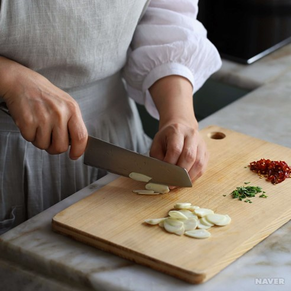
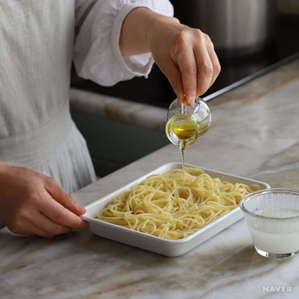
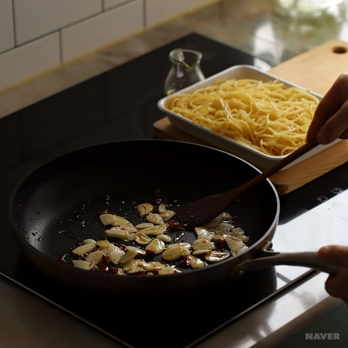
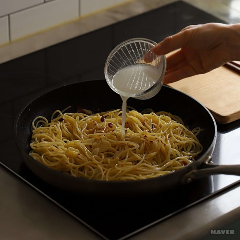
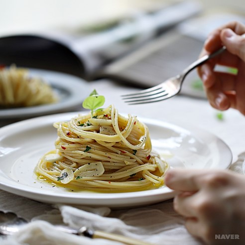

STEP 1

마늘은 편으로 썰고, 페페론치노와 이탈리안 파슬리는 굵게 다져주세요.
STEP 2

소요시간: 6분
물 8컵에 굵은소금 1큰술을 넣고 스파게티면을 6분 정도 삶고, 넓은 그릇에 펼친 후 올리브오일을 뿌려주세요.(면 삶은 물 1/3컵은 남겨주세요)
STEP 3

팬에 올리브오일을 두르고 마늘편, 페페론치노를 넣은 후 약간의 소금과 후추로 밑간하고 마늘을 볶아주세요.
STEP 4

삶은 스파게티면을 넣고 약간의 소금과 후추로 간을 한 후, 면과 소스가 겉돌지않게 면수를 넣어주면서 볶아주세요.
STEP 5

마지막에 약간의 올리브오일과 이탈리안 파슬리를 뿌리고 불을 꺼주세요. 면을 알맞은 그릇에 담아 식탁에 올려주세요.
[네이버 지식백과] 알리오올리오 파스타 - 깔끔담백함을 담은 (아내의 식탁)